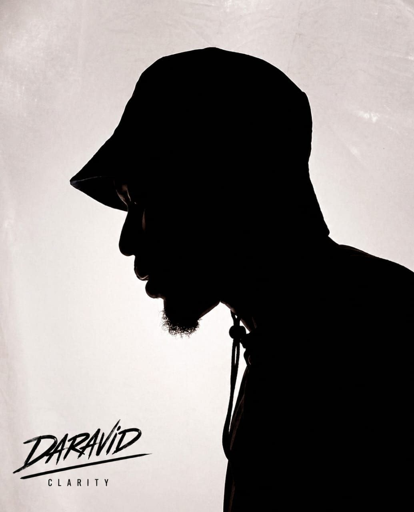

Let's Connect
Let's build
together.
Open to roles, Web3 community partnerships, event speaking, and anything that bridges two worlds.
Send a Message →@iamdaravid
I study the earth's layers and build human communities. Weaving web3 with geology and economics. As a builder, I connect people, protocols and possibilities across nigeria and the globe at large thanks to the internet.

About
Essentially I serve as a bridge between your brand and key opinion leaders (KOLs), facilitating collaborations and ensuring authentic alignment with the right audiences.
The focus is simple: visibility, trust, and adoption.I focus on building and scaling community infrastructure in Web3, with a strong foundation in privacy advocacy (THE GOSPEL) both on and off-chain. I've led growth through storytelling - using videos, in-person events, infographics, and creative content like comics to make privacy relatable and drive real user connection.
With experience in writing, marketing, and event/program planning, I execute with precision and a keen eye for detail, ensuring excellence in delivery across every project.
I currently run a podcast The Privacy Chronicles exploring privacy and Web3 in real-world contexts, further bridging the gap between complex technologies and everyday users.
As the CLARITY ADVOCATE, I pride myself as the bridge between products and people, making adoption a reality.Experience
Over 650+ new searches and downloads.
Recognised as a notable ecosystem contributor
What I Offer
From subsurface analysis to on-chain community strategy — I bring depth to every layer.
Projects
Trusted by thousands of teams worldwide
Let's Connect
Open to roles, Web3 community partnerships, event speaking, and anything that bridges two worlds.
Send a Message →